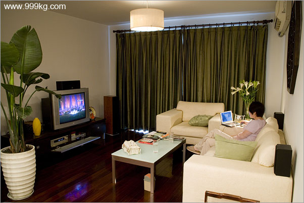
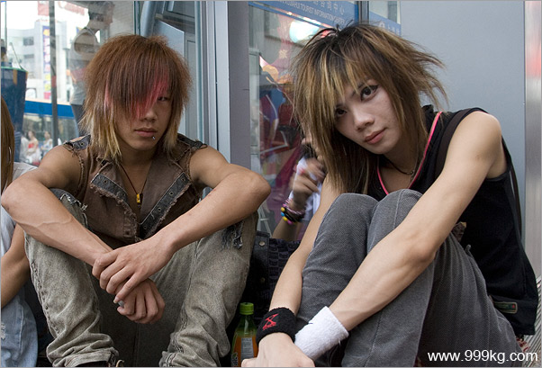
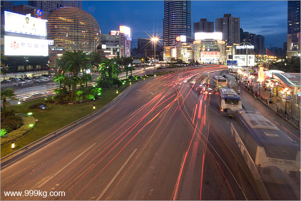
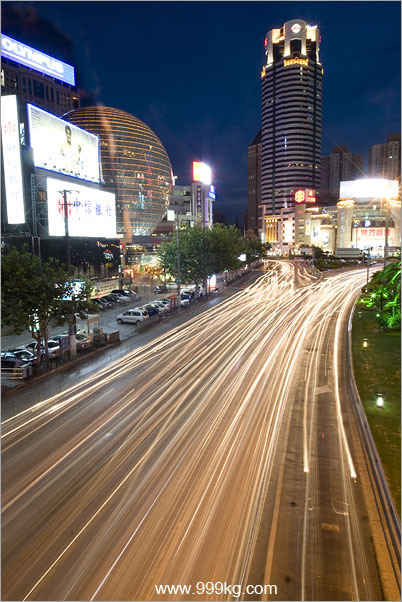
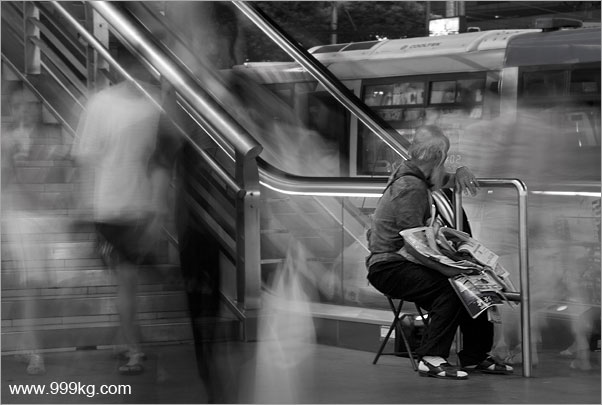
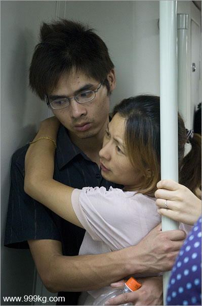

|
上海图文日记2006
2006年8月6日
关于我为什么写英文的解释：我准备2010年左右举办纪录中国摄影展，目标城市在纽约或者欧洲城市。记录中国这个项目主要是向外国人（以及不太出门的中国人）介绍中国现状，以旅游图片为主兼顾人文，并加文字。
虽然我的英文很差但是我没有办法。好的中翻英翻译很贵，差的又比我还差， 我只好自己动手。图片说明都是双语的。
每一两个月我回到长沙休息的时候我就翻译中文。
上海很多旅馆都可以无线上网。以后到了边远地方，我只有每一两个月回到长沙才可以更新图片。这次上海每天更新其实只是一个例外。这个例外已经给我增加了很多负担，还有DV拍摄，都给我造成了很多负担。上海的图片不尽人意这些都是原因。月底回到长沙之后我要再考虑怎么办了。
------------------------------------------------------------------------------------
6 Aug 2006
Among 9 shanghai residents i visited Ms Gao Qian was the nicest to me.
2pm, being baked under the fierce shanghai summer sun, i rung her
up asking for the exact location of her house. Gao smelt my confusion:
OK Yang, go and find KFC near DongFang building, you just stay there
i'll come down and pick you up in 10 minutes.
After 13 years of service in the real estate industry, Gao now
drives a big HONDA and lives alone in a beautifully decorated 3 room
apartment. She belongs to the luckiest group of shanghainese who
do not really have to worry too much about living and money. She had
them all.
Gao was born and grown up in shanghai. As for the general comment on
this city, she laughed: no choice, this is my home city, I have used to
nearly every dimension of shanghai, though in recent years it has grown
explosively beyond my recognition. Anyway, i have to bear with it, good
or bad.
I then strolled through the streets of Xujiahui after visiting Ms Gao.
There is a grand Cathedral nearby but no photography allowed. I will try
to call the cathedral management tomorrow see if i can take a couple of
picture inside.

Visiting Gao's house. Photo ID:
Shanghai806A
访问高小姐家。图片号：Shanghai806A.

Shanghai, street boys @ Xujiahui . Photo ID: Shanghai805B
徐家汇街头少年。图片号：Shanghai806B.

Shanghai Xujiahui. Photo ID: Shanghai806C
上海徐家汇。图片号：Shanghai806C.

Shanghai Xujiahui. Photo ID: Shanghai806D
上海徐家汇。图片号：Shanghai806D.

Newspaper man, Shanghai Xujiahui
overpass. Photo ID: Shanghai806E
上海徐家汇天桥边卖报纸的老人。图片号：Shanghai806E.

Shanghai subway. Photo ID: Shanghai806F
上海地铁。图片号：Shanghai806F.
|